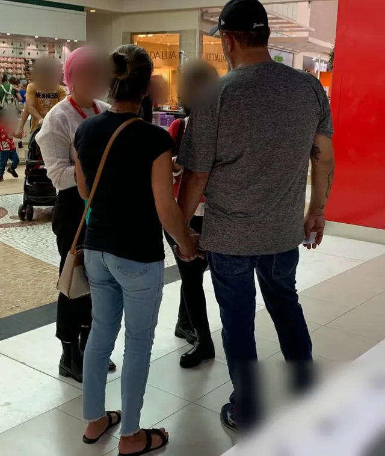
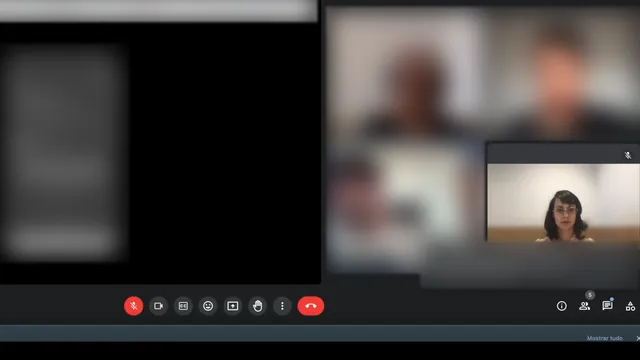
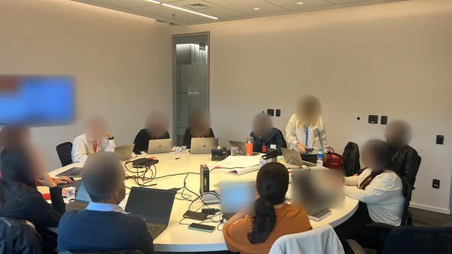

Proyectos Caso 02
Strategic UX Research para la transformación digital
Investigación sobre journeys fragmentados de clientes, dentro de una transformación que reunió el autoservicio residencial y móvil en una sola experiencia.
Visión general
Investigación estratégica y de UX para un gran operador de telecomunicaciones brasileño, como parte de una transformación digital que reunió sus apps de autoservicio residencial y móvil en una sola experiencia.
Durante seis meses, la investigación conectó la evidencia sobre los clientes con las decisiones de producto, negocio y tecnología, desde el discovery hasta la primera fase de implementación.
La integración fue un paso concreto dentro de un esfuerzo más amplio para reducir la fragmentación entre servicios, sistemas y puntos de contacto con el cliente.
- Sector
- Telecomunicaciones
- Organización
- Gran operador de telecomunicaciones brasileño
- Duración del proyecto
- 6 meses
- Año
- 2023
Contexto
La empresa había crecido durante décadas con distintos productos, sistemas y estructuras organizativas. Los clientes residenciales y móviles gestionaban sus servicios en apps separadas, incluso cuando eran clientes de ambos.
La fragmentación también era interna. Sistemas y equipos distintos dificultaban construir una visión única del cliente y comunicarse de forma coherente entre canales.
El reto
Los clientes no deberían tener que entender cómo se organiza la empresa para resolver sus problemas.
El reto no era solo unir dos aplicaciones. Era entender dónde los journeys fragmentados generaban fricción y qué debía ofrecer un servicio más integrado a clientes residenciales, móviles y con servicios combinados.
Había tres niveles en juego: cómo los clientes accedían a sus servicios y los gestionaban, la coherencia de la experiencia entre canales y la integración de áreas, productos y sistemas detrás de ella.
Objetivos de investigación
La investigación se propuso:
Comprender cómo utilizaban los distintos perfiles de clientes los servicios residenciales y móviles.
Mapear necesidades y puntos de dolor en los journeys digitales existentes.
Examinar cómo organizaban sus servicios digitales los operadores de la competencia.
Identificar qué grupos de clientes se verían más afectados por la integración.
Evaluar funcionalidades existentes y propuestas con usuarios.
Enfoque de investigación
Un enfoque de métodos mixtos en tres momentos, en paralelo al trabajo de integración.
-
01
Investigación y discovery
Entrevistas con clientes y stakeholders, cuestionarios, análisis de NPS y TNPS, investigación de mercado y de competidores y análisis de journeys. Los resultados se sintetizaron en tres personas basadas en la investigación.
-
02
Alineamiento estratégico
Los hallazgos se discutieron con UX y diseño, producto, tecnología y dirección, conectando la evidencia sobre los clientes con las prioridades de la integración.
-
03
Seguimiento de la implementación
Las pruebas de usabilidad moderadas y no moderadas continuaron a medida que se proponían nuevos flujos, y reuniones semanales entre áreas acompañaron las primeras entregas de la integración.
La investigación en la práctica



- Prueba de usabilidad en tienda, observando cómo los clientes pasaban de los canales físicos a los digitales.
- Sesión remota moderada con el prototipo del acceso unificado, durante la implementación de la app.
- Lean design y alineamiento semanal entre tecnología y arquitectura, producto y negocio, e investigación y diseño.
Hallazgos principales
-
Patrones distintos de comportamiento y satisfacción entre clientes residenciales y móviles.
-
Tres personas hicieron visibles para los equipos las diferencias en necesidades y puntos de dolor, incluidos los clientes con servicios combinados.
-
La integración debía ir más allá de consolidar funcionalidades.
El acceso, la gestión de productos, la facturación, los beneficios y el paso entre el autoservicio y la atención humana definían la experiencia.
-
El análisis de mercado y competitivo situó estos hallazgos en el panorama más amplio de los servicios digitales.
De la investigación a las decisiones
Los hallazgos orientaron la integración de las dos experiencias de autoservicio y conversaciones más amplias sobre un ecosistema digital más conectado.
Direcciones discutidas con los equipos:
- Acceso unificado a los servicios residenciales y móviles.
- Gestión más centralizada de los productos.
- Facturación e información de servicio más sencillas.
- Beneficios y servicios mejor conectados.
- Atención más coherente entre canales digitales y humanos.
Resultados
La investigación contribuyó a reunir dos apps de autoservicio en una sola experiencia, simplificando cómo los clientes accedían a sus servicios residenciales y móviles y los gestionaban.
Seguí implicada hasta la primera fase de implementación, con las primeras entregas de la integración. La integración formaba parte de una transformación más amplia que continuó después del proyecto.
Transformación a escala
- 2 → 1
- Apps de autoservicio reunidas en una sola experiencia
- Decenas de millones
- Usuarios activos mensuales en las dos apps, según datos públicos de 2024
- 6 meses
- De investigación, del discovery a la primera fase de implementación
Mi contribución
Trabajé como UX Researcher junto al responsable de UX y diseño, en la investigación y el alineamiento de la integración.
Realicé la investigación con clientes y stakeholders, analicé los journeys de los servicios residenciales y móviles, desarrollé las personas, llevé a cabo las pruebas de usabilidad y llevé la evidencia a las conversaciones con producto, diseño y tecnología.
También participé en el seguimiento semanal entre áreas, acompañando la primera fase de la integración hasta las entregas.